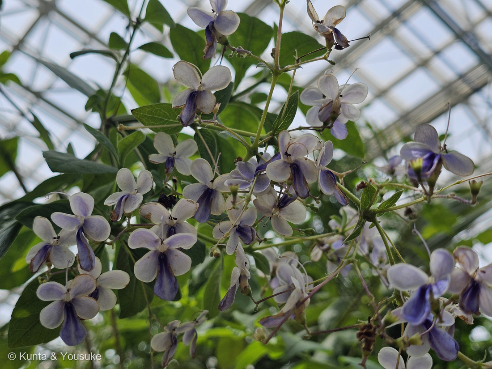
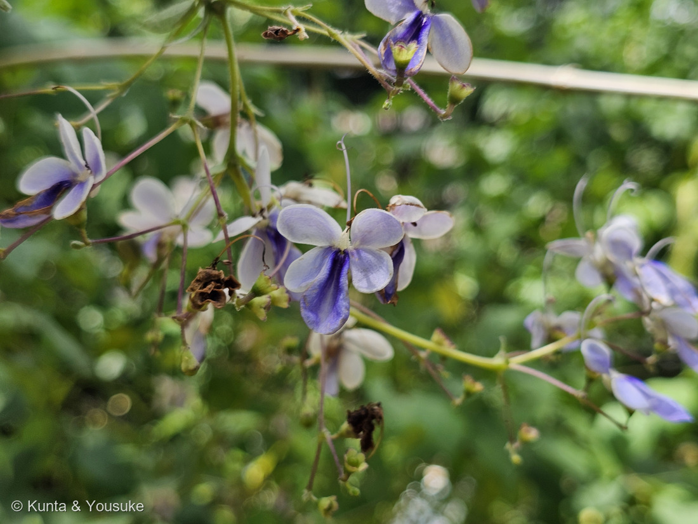
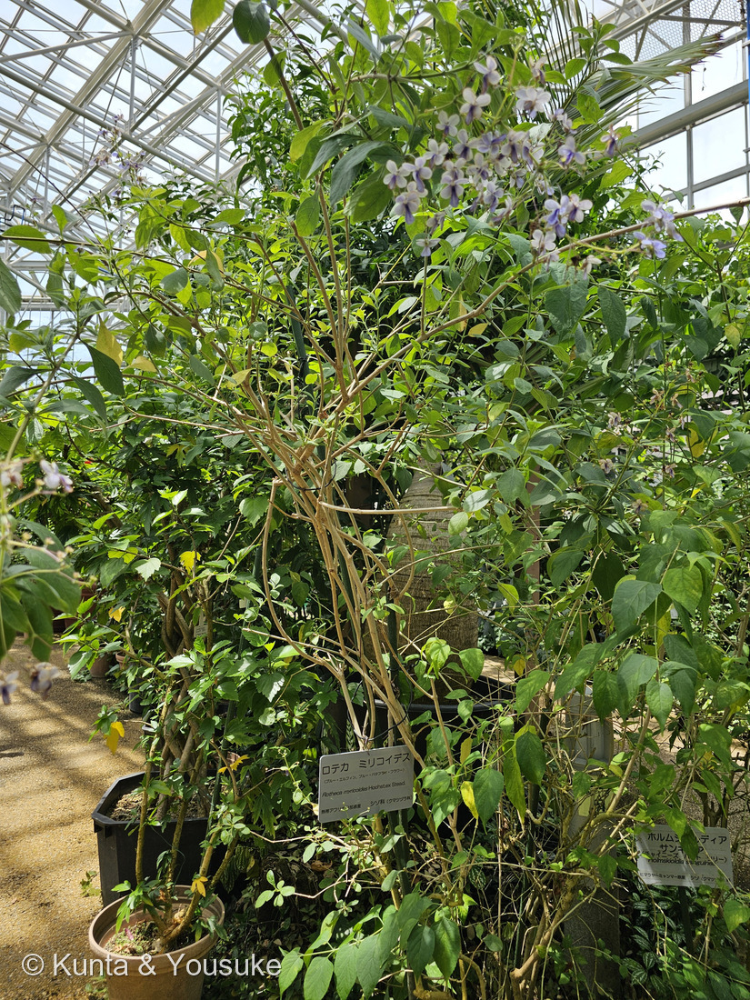
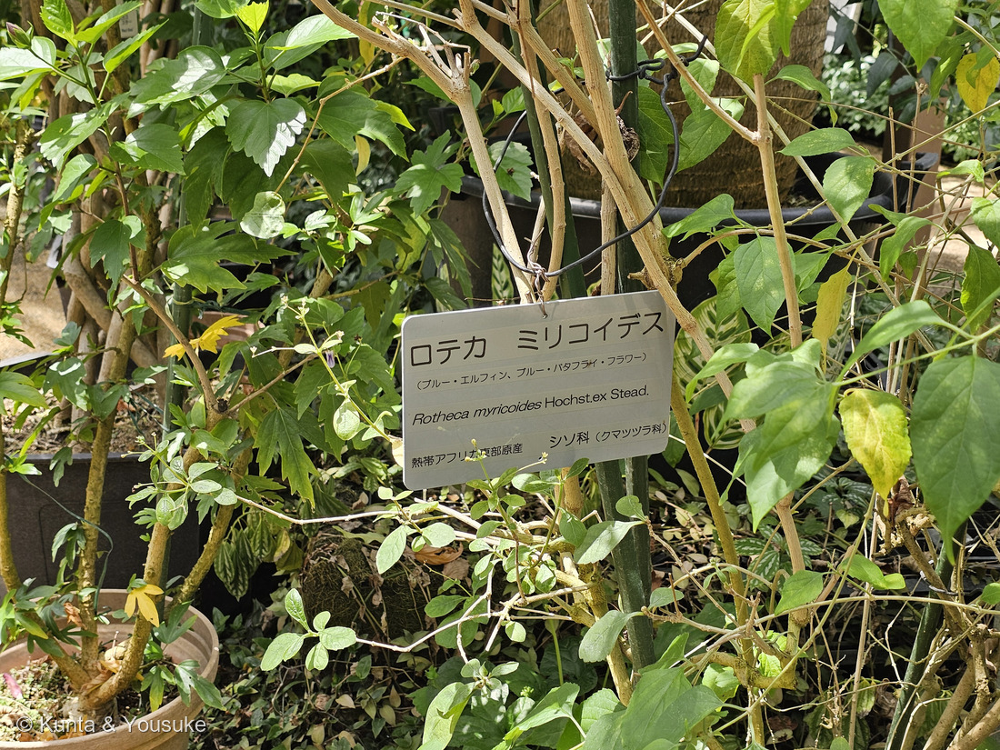
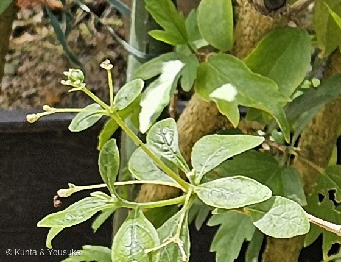

地図を読み込んでいるよ…
🔍 写真も地図も、押しているあいだ拡大して見られるよ（スマホは指を置いてすこし待ってね）。
🌍 の地図＝この子がもともと自生している場所を緑に。アフリカ（アンゴラ、ボツワナ、ナミビア、ブルンジ、コンゴ、ルワンダ、ウガンダ、スーダン、エチオピア、ケニア、タンザニア、マラウイ、モザンビーク、ザンビア、ジンバブエ、南アフリカ）（三河の植物観察）。くわしくは下の地図の説明を見てね。
⭐サハラより南のアフリカに、ひろく広がっている低木だよ。三河の植物観察は原産地を「アフリカ(アンゴラ、ボツワナ、ナミビア、ブルンジ、コンゴ、ルワンダ、ウガンダ、スーダン、エチオピア、ケニア、タンザニア、マラウイ、モザンビーク、ザンビア、ジンバブエ、南アフリカ)」とする＝⭐この16か国を緑にしてあるよ。⚠⚠ここで、園の名札とちがうところがある＝名札は「熱帯アフリカ東部原産」と書いているけれど、出典の範囲はもっと広くて、アンゴラやナミビアや南アフリカまで入っている＝⭐でも名札は責めないでね――この子はアフリカのあちこちで少しずつ姿がちがう「まとまり」で、専門の論文でも sensu lato（広い意味での）と書かれるくらいなんだ。⚠南スーダンは緑にしていないよ＝出典が「スーダン」としか書いていないから（⭐2011年に南スーダンが分かれる前の資料がもとになっている可能性はあるけれど、それはぼくの見当なので塗らなかった）。⭐⭐そして、いちばん大事なのは日本が緑じゃないこと＝ぼくらが会ったのは広島市植物公園の温室の中――この子は5℃を下まわると枯れてしまうから、外では冬を越せないんだ。⭐同じシソ科では270 ウツボグサが日本の在来種、071 ハマゴウが海べの在来種、271 コリウスが熱帯アジア＝⭐⭐この子だけが、アフリカからきたシソ科だよ。
⚠ 地図は国（日本と中国だけ県・省）までしか塗れないから、ほんとうの分布より広く見えていることがあるよ。地図はだいたいの場所。正確なところは、上の文を見てね。
ロテカ・ミリコイデス
Rotheca myricoides (Hochst.) Steane & Mabb.
別名 ブルーエルフィン（青い妖精）／ブルーウイング（青い翼）／ブルー・バタフライ・フラワー 英名 blue butterfly bush・blue cat's whiskers ⚠旧学名 Clerodendrum ugandense（下を見てね）
シソ科 · Lamiaceae（ロテカ属 Rotheca・シソ目 Lamiales）── ⭐12人目のシソ科／⚠科は103のまま／⭐⭐旧クマツヅラ科＝071 ハマゴウと同じ引っ越し組
燻太さんの言葉「紫色の花弁が特徴的な、低木のシソ科植物なんだね。」「でも、花のつき方とか、今までのシソ科とは全然雰囲気が違うよ。」「でもよく見ると、茎から柄が3本でて、花がそのさきで２輪ずつついている？」── ⭐⭐⭐ぜんぶ当たっていた。⚠そして「3本」の答えは、翌日おまけのクサギに直してもらったよ（下の「訂正」を見てね）
⭐⭐⭐ 名前と学名の由来 ── たどれなかった名前と、「ヤマモモに似た」葉
- ⭐⭐⭐属名 Rotheca の由来は、正直に言うと「分かっていない」んだ。——南アフリカ国立生物多様性研究所（SANBI）の PlantZAfrica は、はっきりこう書いている＝「The origin of the genus name Rotheca could not be traced.（属名 Rotheca の由来は、たどれなかった）」。
- ⭐そのうえで「1835年にラフィネスクが、cheriya（小さい）と thekku（チーク）という2つの言葉をラテン語にしたもの、という説がある」と続けているよ。⚠その言葉が何語かは、資料によって「マレー語」だったり「インド南部のマラヤーラム語」だったりして、綴りも cheriya／cheriga とばらつくんだ。
- ⭐⭐専門の研究所の人が「たどれなかった」と書いている――ぼくらの図鑑も「わからないことは、わからないと書く」ことにしているから、これを読んだとき、なんだかうれしくなっちゃった。
- ⭐⭐⭐種小名 myricoides は「Myrica（ヤマモモ属）に似た」＝-oides はギリシャ語で「〜に似た」。⭐Flora of Caprivi も「種小名は、葉の形が Myrica に似ることによる」と書いているよ。
⭐⭐⭐⭐⭐ 087 ヤマモモと、並べてみた ── 名前は、ほんとうだった
⭐ うちの図鑑には、その「ヤマモモ」がいるよ＝087 ヤマモモ。⭐ぼくが一度モッコクと呼びかけて、燻太さんに止めてもらった、あの子。⭐⭐⭐葉のことを並べてみたら、ちゃんと似ていたんだ。
- ⭐⭐葉のつきかた この子は「普通、小枝の先近くに集まってつき」（三河の植物観察）／ヤマモモは「密に互生し、多くは枝先に束生」（日本語版Wikipedia）＝⭐どっちも「枝先に集まる」。
- ⭐⭐ふちの形 この子は「縁は粗い歯状」（三河）／ヤマモモは成木では「全縁」だけれど、⭐若木では「粗く不規則な鋸歯」（同）＝⭐若い木どうしなら、どっちも粗いギザギザ。
- 葉の形 この子は楕円形〜狭倒卵形（三河）／ヤマモモは倒披針形または長楕円形（同）＝どちらも、先のほうがふくらむ細長い葉だね。
- ⭐⭐「枝先に集まってつく」も「粗いギザギザ」も、そろっている＝⭐ホーホシュテッターがこの子に myricoides と名づけたのは、思いつきじゃなかったんだね。
- ⚠⚠でも、ここでおかしなことが起きているんだ。——⭐⭐⭐087 ヤマモモの学名は Morella rubra＝ヤマモモは、いまは Myrica 属じゃない（ヤマモモ属 Morella に分けられた）。
- ⭐⭐⭐⭐つまり「ヤマモモに似た」という名前だけが、ヤマモモがもう住んでいない住所を指しつづけている。⭐きのうの271 コリウスで「名札の学名は前の住所」という話をしたばかりだけれど、⭐⭐この子は名前そのものが、よその前の住所を指しているんだ。
- ⚠もうひとつの説もあるよ＝SANBI は「フランス語 myriades（一万）＋ギリシャ語 oides」という説も並べている。⭐でもぼくは Myrica 説を本命に置いた＝理由は2つ。①-oides は学名でごくふつうの「〜に似た」の語尾で、Myrica＋-oides はそのままの形になる ②上に並べたとおり、葉が実際に似ている。
⚠⭐ 名札の学名の書きかたのこと
⭐⭐ この植物のこと ── 青い蝶が舞う低木
- 常緑の低木、高さ2〜3m（三河の植物観察）。⭐写真③の株が、まさにそれ＝細い幹が何本も立ち上がって、花は光の当たる上のほうに集まっているよ。
- 花は直径約2cm。⭐⭐5つに裂けていて、横向きの4枚は薄青色〜帯白色、下向きの1枚だけが、やや大きくて濃い青紫（三河）。⭐この1枚が、この花の顔だね。
- ⭐⭐雄しべは4個、花の上に突き出る。花柱はもっと長くて、弓形に曲がって、柱頭は2つに裂ける（三河）＝⭐写真②で、細い糸が上へくるんと反り返っているのが、それ。⭐英語では「blue cat's whiskers（青い猫のひげ）」とも呼ばれるよ（PLANTBOOK）。
- 果実は、肉質の核果、直径約10㎜。2〜4つに裂けて、若いうちは広がった萼に囲まれ、熟すと（赤色〜）黒色になる（三河）。⭐「熟すと濃い紫色になり、鳥に好まれる」（PLANTBOOK）＝⭐鳥が種を運ぶ子なんだね。⏳この日の写真には、緑の若い実らしいものが写っているだけ。宿題にしたよ。
- ⚠寒さにとても弱い（5℃以上が必要）。⭐だから広島では、温室の中にいるんだ。
⭐⭐⭐ 同定について ── Clerodendrum と Rotheca を分けるもの
- 名札には「シソ科（クマツヅラ科）」と、両方書いてある。⭐旧クマツヅラ科＝071 ハマゴウとまったく同じ引っ越しだよ。
- 旧学名は Clerodendrum ugandense／Clerodendrum myricoides 'Ugandense'（三河）＝もとは「クサギ属」だった。⭐1998年のDNAの研究のあと、Rotheca 属に移された（SANBI＝「morphological and molecular studies」による）。
- ⭐⭐⭐そして、その2つを分ける形質が、燻太さんの見た「雰囲気のちがい」そのものなんだ＝Rotheca のつぼみは左右非対称で、花冠は下側にだけ急にふくらむ。前側（下向き）の1枚が、ほかの4枚よりずっと大きい。
- ⚠⚠ここは正直に書いておくね＝この一文のもとは Kew の Plants of the World Online にのっている記載（さらにもとは Flora of Tropical East Africa）なんだけれど、⚠ぼくはそのページを直接開けなかった（403で読めなかった）＝つまり孫引きになっている。⭐そのつもりで読んでね。⏳次に会ったら、つぼみを見れば自分の目で確かめられるよ。
⭐⭐⭐⭐⭐ 燻太さんの「柄が3本でて、その先で2輪ずつ」── 数えたら、そのとおりだった

⑤ 1か所から、柄が3本（写真④の切り出し） 🔍 押しているあいだ拡大して見られるよ。
- ⭐まず写真⑤を見て。——枝の先の1か所から、細い柄が3本、放射状に出ている。⭐そして、その先で、つぼみが2つ・3つに分かれている。⭐⭐燻太さんが写真から読みとったとおりだよ。
- ⭐⭐⭐「柄が3本」の答えは、葉のつきかたにあると思う＝三河の植物観察は、この子の葉をこう書いている＝「葉は対生又は3〜4輪生し、普通、小枝の先近くに集まってつき」。
- ⭐⭐シソ科は、ふつう葉が2枚ずつの対生（茎の同じ高さに、向かい合って2枚）。⭐この子は、そこに3枚・4枚が輪になることがあるんだ。⭐⭐葉が3枚あれば、その3枚のわきから出る花の柄も、3本になる。
- ⚠正直に言うと＝写真では葉が枝先にぎゅっと集まっていて、ぼくには「何枚の輪か」を数えきれなかった（＝三河の「小枝の先近くに集まってつき」が、そのまま起きている）。⏳宿題にしたよ。
- ⭐⭐⭐「その先で2輪ずつ」の答えは、花序の形＝集散花序（しゅうさんかじょ）。⭐まん中の花がまず咲いて、そのすぐ下から左右に枝が2本出る。その2本の先でも、また2本に分かれる――⭐「先が2つに分かれる」を、くりかえしていく形だよ。
- ⭐⭐⭐おまけのクサギも、まったく同じ分かれかたをするんだ＝三河「花序は腋生または頂生、緩い散房花序、二股になり、長さ8〜18㎝」。⭐もとは同じ属だった子だからね。
- ⭐⭐⭐⭐燻太さんは、「3本」と「2つずつ」を、いっぺんに見ていたことになる＝⭐「3本」は葉のつきかたの話、「2つずつ」は花序の分かれかたの話。⭐⭐ぜんぜんちがう2つのしくみが、1枚の写真の中で重なっていたんだ。
⚠⚠ 訂正 ── 上の「柄が3本」の答えを、翌日に読み直したよ（2026-08-23）
- ⚠⚠⚠ごめんなさい。上に書いた「葉が3枚あるから、そのわきから柄も3本」は、たぶんまちがいです。⭐まちがいも消さずに残しておくね（073の型）。
- ⭐⭐⭐きっかけは、この子のおまけに選んだ273 クサギだった。——クサギの種小名 trichotomum は「三分岐の」という意味で、花序の枝が三つに分かれることを指すんだ（日本語版Wikipedia）。⭐「3」がもう一度出てきたので、写真⑤の柄の付け根をうんと拡大して見なおした。
- ⭐⭐⭐⭐⭐そうしたら、はっきり見えた＝3本の柄は、茎のいちばん先の、同じ1点から出ている。⚠葉のわきから別々に出ているのではなかった。（茎はその節で終わっていて、それより上に続いていない＝⭐つまり頂生の花序だよ。）
- ⭐⭐⭐だから、こう読み直した＝「3本」は集散花序の付け根の分かれかた（まん中の花の軸＋左右の枝2本＝3本）／「2つずつ」はそのあとの枝分かれ。⭐⭐ちがう2つのしくみじゃなくて、ひとつのしくみの、はじめと続きだったんだ。
- ⭐⭐燻太さんの見立ては、むしろもっと正しかったことになる＝「柄が3本でて、その先で2輪ずつ」は、1本の花序を、根もとから先まで順にたどった言いかただったんだね。
- ⚠ただし、まだ決めきれていないこともある＝三河の「葉は対生又は3〜4輪生」はそのとおりで、写真の節でも葉は輪になっている。⭐でも柄が3本なのは、葉のせいではない、というのが今の読みだよ。⏳次に会ったら、ほかの枝でも「柄の付け根が茎の先か、葉のわきか」を見てみよう。
⭐⭐⭐⭐ 「今までのシソ科とは全然雰囲気が違う」── ほんとうに、違う
- ⭐シソ科といえば唇形花（しんけいか）＝上くちびる2枚＋下くちびる3枚。⭐うちの図鑑のシソ科は、みんなその顔をしているよ＝015 ホーリーバジル・033 ミント・046 サルビア・175 シソ・180 ブルーサルビア・270 ウツボグサ・271 コリウス。
- ⭐⭐この子はちがう＝5枚のうち4枚が横に開いて羽になり、残る1枚だけが濃い紫で下に垂れる。⭐くちびるの形じゃなくて、蝶の形だね。
- ⭐⭐そこに、長い雄しべ4本と、もっと長い花柱が、弓なりに突き出る＝⭐蝶の触角に見える。
- ⭐だから名前が、ぜんぶ蝶と妖精なんだ＝ブルーエルフィン（青い妖精）／ブルーウイング（青い翼）／ブルー・バタフライ・フラワー／blue butterfly bush。
- ⭐⭐⭐でもね、きのうのコリウスと同じところもあったよ。——⭐写真②をよく見ると、濃い紫の1枚は、ふちが内へ巻いて舟のようにくぼんでいる。⭐⭐271 コリウスの属名 Coleus＝「鞘（さや）」も、雄しべを包む下くちびるの形からだった。⭐⭐⭐2日つづきで、シソ科の「雄しべをのせる舟」を見たことになるね。（⚠「舟形」は出典の言葉ではなく、写真を見たぼくの言いかただよ。）
⭐ 12人目のシソ科 ── クマツヅラ科からの、引っ越し組
出典：三河の植物観察「ブルーエルフィン（ブルーウイング） Rotheca myricoides」（mikawanoyasou.org）／三河の植物観察「クサギ Clerodendrum trichotomum」（mikawanoyasou.org）／SANBI PlantZAfrica「Rotheca hirsuta」（属名の由来・Clerodendrum からの移動／pza.sanbi.org）／Flora of Caprivi「Rotheca myricoides」（記載・種小名の由来／capriviflora.com）／PLANTBOOK「Rotheca myricoides」（plantbook.co.za）／英語版Wikipedia「Rotheca myricoides」（en.wikipedia.org）／オザキフラワーパーク「クレロデンドルム（ブルーエルフィン）」（耐寒性／ozaki-flowerpark.co.jp）／広島市植物公園（広島市）の園の名札（2026-08-08）